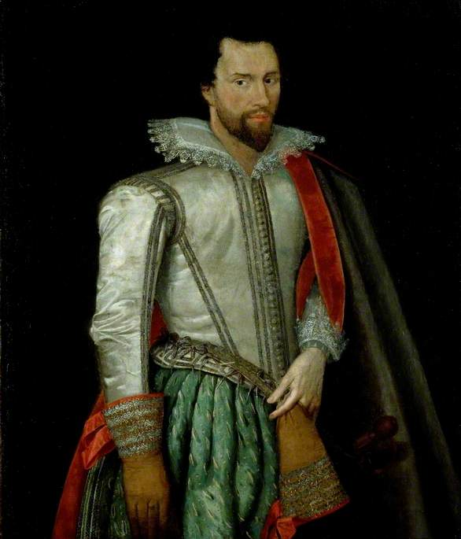

Sir Thomas Holt of Aston
Sir Thomas Holte, 1st Baronet of Aston (c. 1571 – 14 December 1654) was a prominent English landowner, royalist, and builder of the renowned Aston Hall near Birmingham (then in Warwickshire). He was the founder of the Holte Baronets of Aston and a key figure in local history, known for his wealth, status-seeking ambitions, and staunch support for King Charles I during the English Civil War.
Early Life and Family
Born around 1571, likely at the family seat in Duddeston (near Birmingham), Sir Thomas was the eldest son of Edward Holte (d. 1592/3) of Duddeston Manor House and Dorothy Ferrers(daughter of John Ferrers of Tamworth Castle). The Holte family had been influential landowners in the Aston and Duddeston area since at least the 14th century, with earlier members serving as lawyers, justices, and commissioners under Henry VIII.
Thomas received a solid education: he matriculated at Magdalen College, Oxford, in February 1587/8 (aged 17) and was admitted to the Inner Temple in 1590. His family's estates and connections placed him among Warwickshire's gentry elite.
Career and Honors
In 1599–1600, he served as High Sheriff of Warwickshire. He was knighted by James I on 18 April 1603 at Grimston, Yorkshire, during the king's progress from Scotland to London.
In 1611/12 (created 25 November 1611 or 1612 in some records), he purchased the title of Baronet from James I (who sold such honours to fund Irish campaigns), becoming the first of the Holte Baronets of Aston. This elevation reflected his substantial wealth—derived from land, iron trade interests, and an annual income approaching £2,000—and his desire for greater social prestige.
Aston Hall and Legacy
Ambitious and status-conscious, Sir Thomas commissioned the grand Jacobean mansion Aston Hall (designed by architect John Thorpe) starting in 1618. He moved in around 1631, with completion in 1635. The “prodigy house” style reflected his wealth and rank, outshining local rivals. Today, Aston Hall is a Grade I listed building and museum, with its grounds once extending to what is now Villa Park (Aston Villa FC’s stadium; the “Holte End” stand is named after him).
He also founded almshouses in Aston for the poor.
Civil War and Later Years
A fervent royalist, Sir Thomas supported Charles I by raising funds and supplies. On 18 October 1642, the king stayed at Aston Hall en route to London, just before the Battle of Edgehill (23 October). Sir Thomas garrisoned the house and sent his son Edward to fight for the king.
Parliamentary forces retaliated: the hall was plundered, Sir Thomas imprisoned, and his estates heavily fined (losses estimated at £20,000). Despite this, he remained loyal.
He married twice:
First to Grace Bradbourne (daughter of William Bradbourne of Hough, Derbyshire), with whom he had
several children (including son Edward, d. before his father; many died young).
Second to Anne Littleton (sister of Sir Edward Littleton, 1st Bt., daughter of Sir Edward Littleton of
Pillaton, Staffordshire), no surviving issue.
Sir Thomas died on 14 December 1654, aged about 83, and was buried at Aston with a memorial inscription. His estates passed to his grandson Robert Holte (son of Edward), who became the 2nd Baronet.
Personal Notes and Folklore
Sir Thomas had a reputation for a fiery temper; local legends (possibly exaggerated) claim he murdered a cook in rage (leading to a “red hand” motif in some family arms tales) and imprisoned his daughter for years (fueling ghost stories at Aston Hall, said to be one of England’s most haunted sites).
His life exemplifies the ambitious Stuart-era gentry: rising through land, titles, and grand building, while enduring Civil War hardships for loyalty to the crown. Aston Hall remains his enduring monument.

Sir Thomas Holte (c.1571–1654), 1st Bt of Aston Hall.
Public domain via Birmingham Museums Trust
under a Creative Commons Zero licence (CC0)